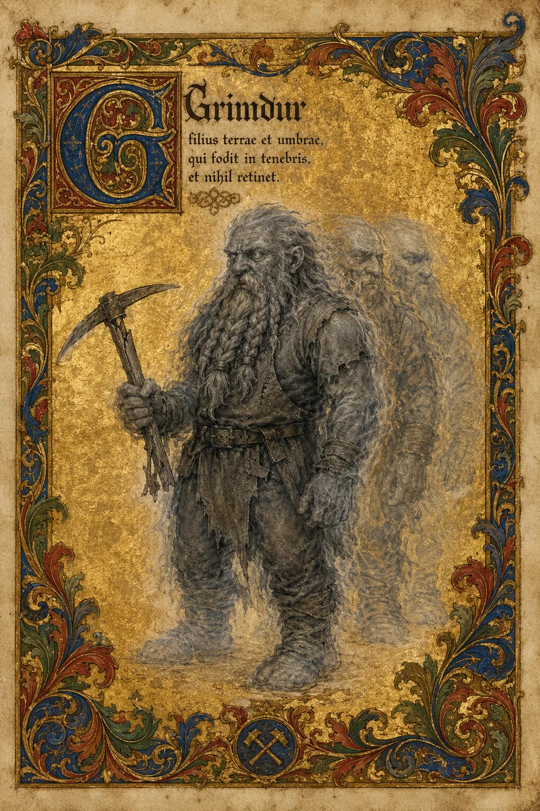

Dûrgan
filius terrae et umbrae, qui fodit in tenebris, et nihil retinet.
syn ziemi i cienia, który drąży w ciemności i nie zatrzymuje niczego


Był krasnoludem-górnikiem. Nie głupim, ale i nie uczonym; znał kamień, narzędzia i ciężar, nie magię. Pracował kilofem, który miał rozbijać moc rudy w chwili uderzenia — czy własnym, czy danym mu do próby, nie roztrząsa. Pewnego razu trafił w żyłę, której nie rozumiał. Nie było zwykłego wybuchu. Coś w rudzie obróciło się przeciw niemu i rozdarło nie skałę, lecz jego — rozsypało go po miejscach pomiędzy światami.
Zbierał się długo. Nie wiedział jak; po prostu nie dał się rozpuścić — kawałek po kawałku ściągał siebie z powrotem do jednego środka, aż większość zrosła się w jedno, ledwie materialne ciało. Reszta nie wróciła. Dziś jest na wpół przezroczysty, widzi w szarości, czasem wsuwa się tam, gdzie inni nie sięgają, a te uwięzione kawałki potrafi na moment wezwać, by stanęły i uderzyły obok niego.
Z tamtego dnia pamięta niewiele. Czym była ruda, jak działał kilof, kto kazał mu uderzać — zatarło się to razem z resztą, której nie odzyskał. Nie został z tego magiem ani nikim wybranym; po prostu tym, któremu się to przydarzyło. Trzyma się dwóch rzeczy: roboczego rozsądku, z jakim się urodził, i własnego imienia — jedynego, czego się nie wyrzekł, gdy inne wspomnienia odpłynęły.
To, co mu zostało
Po karcie rozsypały się złote okruchy. Zbierz je kliknięciem — kawałek po kawałku, do jednego środka.
Echa
Uwięzione kawałki potrafi na moment wezwać, by stanęły i uderzyły obok niego.
Szarość
Widzi w szarości. Złoto płatkowe, lazur i cynober — dla niego tylko odcienie kamienia.
Imię
Jedyne, czego się nie wyrzekł, gdy inne wspomnienia odpłynęły.
Welian — rozpuszczenie i poddanie. Dûrgan — odmowa rozpadu, upór woli. Opi — analiza.Odrębność w obsadzie · z teczki projektu Opusa
Archiwum
- Karta postaci — stan obecnyOryginalna iluminowana karta.Strona957 KBPDF1,7 MB
- Iluminacjawelin, złoto płatkowePNG3,8 MB
Dûrgan · z klanu Vundrakkûn · Krąg Cieni